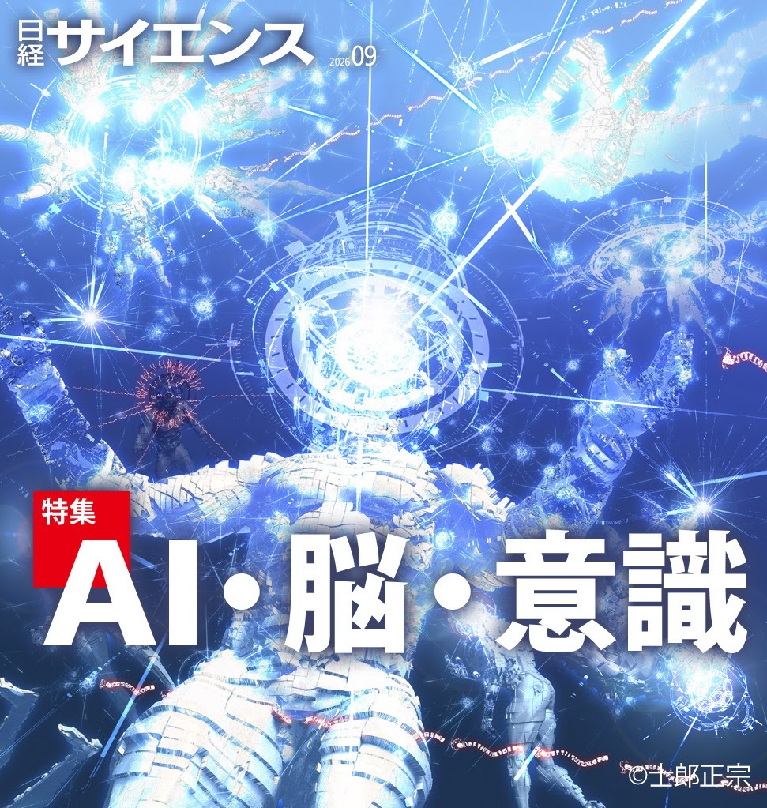
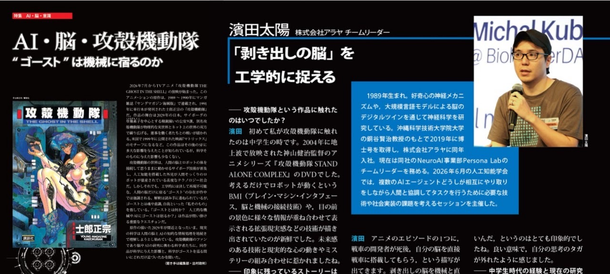
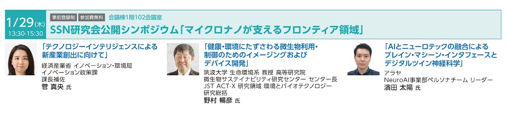
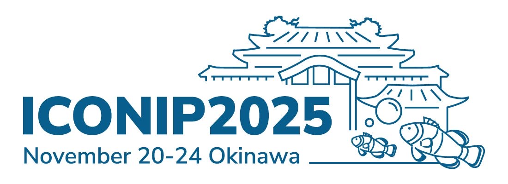
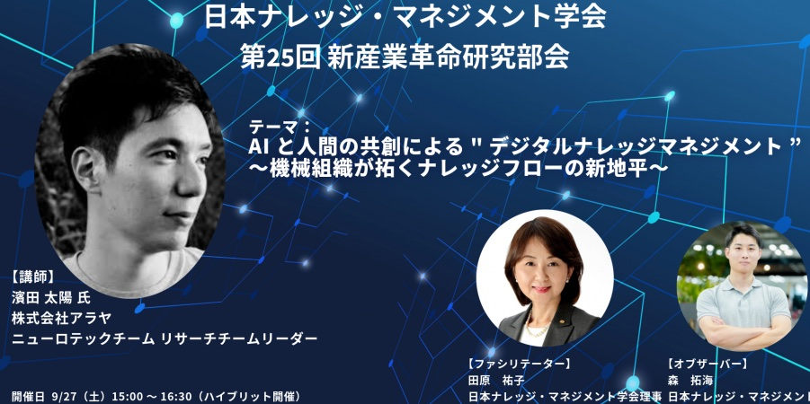
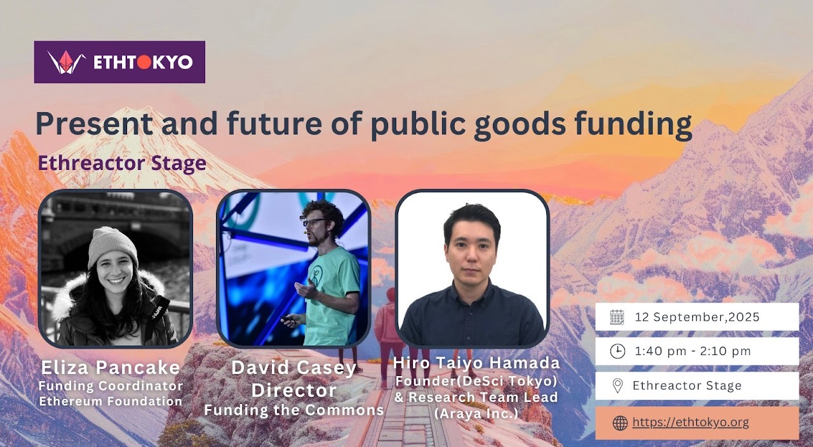
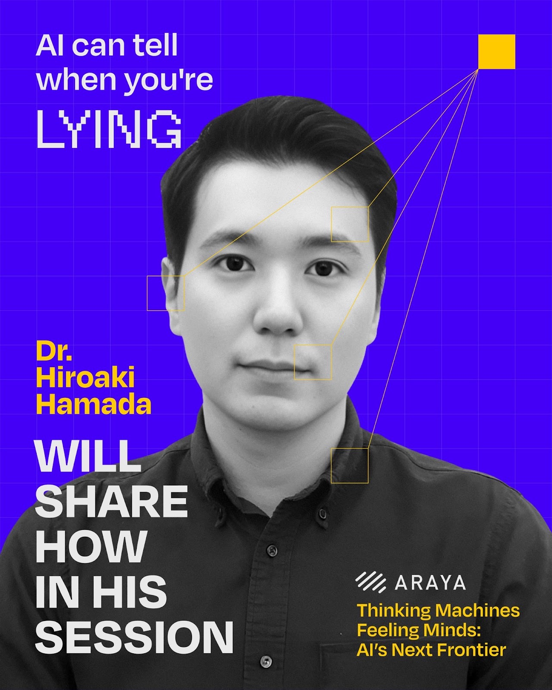

2026
日経サイエンス 2026年9月号 特集：AI・脳・意識


4月24日 MMDS 大阪大学 数理・データ科学教育研究センター
4月24日にMMDS 大阪大学 数理・データ科学教育研究センターにて登壇いたします。セミナー一覧
4月10日 CREST 認知フィーリング（東大本郷）
4月10日にCREST 認知フィーリング（東大本郷）にて濱田が登壇いたします。
3月26日 NEDO懸賞金活用型プログラム シンポジウム
NEDO懸賞金活用型プログラムのシンポジウム3月26日にて濱田が登壇いたします。NEDO Challenge, Exploring Neurotech New Markets
特集「AIと神経科学の接点2026」人工知能学会
人工知能学会の特集号に『Neuro-aligned AI による機械神経科学』（濱田 太陽）寄稿いたしました。NeuroAIとMechanistic Interpretabilityの交差について整理し、Neuro-aligned AIの可能性についてまとめました。
新しい研究機関『Focused Research Organization (FRO)』とその可能性

Focused Research Organization という新しい研究開発の取り組みが諸外国で進みつつあります。また FRO を応用し、米国では NSF の Tech Labs Initiative も始まろうとしています。この FRO の応用可能性について、研究や政策、ビジネスに関わる人たちが集まり、公開で議論します。
2026/02/04 株式会社NTTデータ経営研究所（千代田区平河町）
濱田は、『Neuro-aligned AIを用いた機械神経科学: ペルソナシミュレーションによるデジタルツインへの応用』というタイトルで登壇します。ポスト Website
近年の進展により、生成AIモデルが神経応答を正確に予測できることが示され、脳の機能モデルを多岐の用途に利用できる可能性が出てきました。本講演では、AIシステムを脳の表象・ダイナミクス・人間行動と整合させる「Neuro-aligned AI」の概念を紹介します。因果解析、表現幾何学、回路介入といった神経科学的手法を応用し、現代のAIシステムを解剖・解釈する手法について議論します。またAIを脳モデルとして扱うことで、高度なAIシステムと人間の神経系を橋渡しする機械神経科学の枠組みを提案し、開発しているペルソナシミュレーターと連携したAIエージェント連携の未来についても議論します。
2026年01月29日 東京ビッグサイト西2ホール

濱田は、『AIとニューロテックの融合によるブレイン・マシーン・インタフェースとデジタルツイン神経科学』というタイトルで登壇します。ポスト
生成AIの発展により人と機械、脳とネットワークが融合する新たな情報基盤が生まれつつある。そこで注目されているブレイン・マシン・インタフェース（BMI）とデジタルツイン神経科学のインパクトとその課題を紹介する。
2025
2025年11月24日 沖縄 ICONIP2025 公開フォーラム

濱田がICONIP2025のOpen Forum公開フォーラム『人とAIの織りなす社会 Society of Humans and AI Agents』で登壇いたしました。
- テーマ「科学するAIと人間社会」
- コーディネーター：銅谷賢治（OIST）
- 山田祐太朗（Sakana AI）
- 濱田太陽（ARAYA）
- 林祐輔（AI Alignment Network）
2025年11月20日 沖縄 Special Session “Toward Safe Brain-Inspired AI” @ICONIP2025
2025年9月27日 UIS (Uvance Innovation Studio) @Uvance Kawasaki Tower 26F

濱田がKMSJ 第25回 新産業革命研究部会にて『研究テーマ：AIと人間の共創による"デジタルナレッジマネジメント” ～機械組織が拓くナレッジフローの新地平～』で登壇いたしました。
2025年9月12日 国連大学 ETH Tokyo

濱田がETH TokyoにてEthereactor Stage『Present and future of public goods funding』でパネリストとして登壇いたしました。Xポスト
2025年9月10日 Google for Startups Campus
第10回全脳アーキテクチャ・シンポジウム（2025年9月4日開催）
濱田は、パネルディスカッションに参加しました。テーマ「AGI・脳・社会：ヒト脳型 AGI はヒトとAI社会の“信頼”の架け橋になるか？」
- 日時：2025年9月4日（木）13:20～17:10
- 会場：東京大学本郷キャンパス南研究棟3F・鉄門臨床講堂／オンライン（Zoom）
- 参加者：約200名（Zoom参加者：147名）
- 主催：NPO法人 全脳アーキテクチャ・イニシアティブ
- 協賛：学術変革領域研究（A)「行動変容を創発する脳ダイナミクスの解読と操作が拓く多元生物学」
動画
 【AIクローン】未来、不老不死の人間が続出!?/AIは〇〇分で人間をトレースできる/デジタルツイン
【AIクローン】未来、不老不死の人間が続出!?/AIは〇〇分で人間をトレースできる/デジタルツイン 【最新研究】未来、AIが使えなくなる可能性がある？/AI同士が組織を作る機械組織論とは？
【最新研究】未来、AIが使えなくなる可能性がある？/AI同士が組織を作る機械組織論とは？ AIが“好奇心”を持ち始めている！？ ChatGPTが前のめりになってタスクに取り組み出す─そんな不思議な現象から始まった今回の対談。
AIが“好奇心”を持ち始めている！？ ChatGPTが前のめりになってタスクに取り組み出す─そんな不思議な現象から始まった今回の対談。 「今年はパーソナルAIアシスタントが来る！」──AIエージェント、AI同士の協力・価値交換、そして人間との境界線。AI・神経科学研究者 濱田太陽さんと向縄が未来の働き方・生き方を語ります。
「今年はパーソナルAIアシスタントが来る！」──AIエージェント、AI同士の協力・価値交換、そして人間との境界線。AI・神経科学研究者 濱田太陽さんと向縄が未来の働き方・生き方を語ります。 AI×Web3が生む “分散型科学（DeSci）”─研究資金・論文出版・データ共有の課題をどう乗り越えるのか？ 神経科学者 濱田太陽さんをゲストに迎え、向縄が深掘りします。
AI×Web3が生む “分散型科学（DeSci）”─研究資金・論文出版・データ共有の課題をどう乗り越えるのか？ 神経科学者 濱田太陽さんをゲストに迎え、向縄が深掘りします。BRIDGE Osaka

7月28日、BRIDGE Osakaにて登壇しました。濱田は『Thinking Machines, Feeling Minds: AI’s Next Frontier』を発表しました。Xポスト
Anthropic Research Salon Tokyo
6月26日（木）、代官山T-SITEのAnjin Loungeにて、Anthropic、理化学研究所（RIKEN）との共催による「Anthropic Research Salon Tokyo」を開催いたしました。濱田はパネリストの1人として、「AI for science」パネルディスカッションに参加しました。アラヤのお知らせ
日経ムック AIで加速する エマージングテクノロジー (2025年06月26日)
『［ブレインテック］アラヤ発話時の脳信号をAIが解析しボイスレスの会話を実現する』にて濱田のインタビューが掲載。書籍ページ
Explainable AI Workshop 技術革新と脅威の調和ー説明可能AIを考える。
2025年6月7日（土）13:00 - 17:00、京都大学東一条館1F 113号室およびオンライン（Zoom）。ワークショップのページ
- 渡辺 琢也 経産省 商務情報政策局 情報処理基盤産業室長
- 飯田 正仁 三菱総合研究所 生成AIラボ 研究員
- 濱田 太陽 株式会社アラヤ Research Team Lead
- 林 祐輔 AI Alignment Network 理事
- 橋本 崇 日本銀行 金融機構局 企画役
- 趙 亮 京都大学 大学院教育支援機構・大学院総合生存学館 教授
日経サイエンス 2025年6月号 特集：好奇心に好奇心
脳が興味を生み出すとき 「やる気」の源泉に迫る。出村政彬（編集部） 協力：村山 航（独テュービンゲン大学）／松元健二（玉川大学）／濱田太陽・野辺宣翔（ともに株式会社アラヤ）／佐藤大気（千葉大学）記事
『PLURALITY 対立を創造に変える、協働テクノロジーと民主主義の未来』
オードリー・タン E・グレン・ワイル（著）。濱田は、『品質管理となめらかな社会』のセクションの執筆に貢献しました。サイボウズ式ブックス
攻殻機動隊 MESSED MESH AMBITIONS
濱田が執筆した『分散を社会実装できるか：神経科学から辺境まで』が講談社から出版されました。構成＿瀬下翔太［Shota Seshimo］ 図版＿安藤瑠美［Rumi Ando］ 版元ドットコム
ポッドキャスト・寄稿・講演（〜2024）
IDEA FLOW / アイデアフロウ #2-01「分散型イノベーションコモンズ」とは？
シーズン2は、研究科学を拡張する「メタサイエンス」領域とAIに関するアイデアを扱います。初回は神経科学者でニューロサイエンスのリサーチャーをされている濱田太陽さんと「分散型イノベーションコモンズ」などについてお話しました。Spotify
RIETI「DXの思考法」セミナーシリーズ

DX時代の新たな政策のあり方について、経済、金融、通商、教育、人事・組織といったさまざまな分野で意欲的な提案がなされた。その後の財務省等での展開を紹介する。
研エンの仲 #60 大富豪はなぜ研究財団を作るのか?
濱田太陽さんをゲストにお招きし、世界の研究所や財団とその成り立ち、大富豪はなぜ研究財団を作るのか、科学を持続可能にするために、濱田さんの推し大富豪、などについて話しました。Spotify
2023年 Web３社会がつなぐ研究と人と資金
アドスタディーズへの寄稿記事。記事